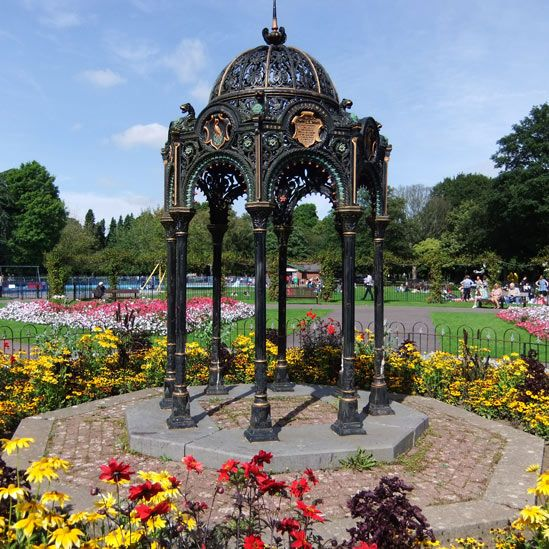
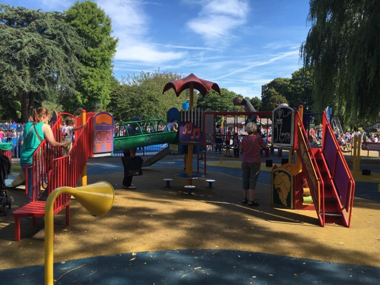

Victoria Park is one of Cardiff’s best-loved traditional parks. Opened in 1897 , the park is situated in the western suburb of Canton. Its colourful flower borders and wide range of facilities continue to have year-round appeal for all ages.
The park was one of the first in the UK to receive a restoration grant from the Heritage Lottery Fund in 1995. Historical features within the park have been preserved and continue to bring joy to park visitors today.
Victoria Park is one of the city’s Green Flag parks.
Victoria Park has a vast play area for younger and older children with climbing frames; a spinning bowl; a zip wire slide; a rotating rope climbing frame and more. In the summer months you can also visit the newly refurbished splash pad with sprays jets a tipping water bucket another water features spread across three zones for toddlers and older children.
The park is open from 07:30 until 30 minutes before sunset all year round.